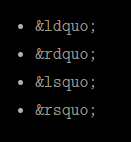

You can visit Images for more info on image using in HTML or Links for more extra knowledge on using Links in HTML.
That works for referring to files that are in the same folder or a deeper folder. What about linking to pages that are in a directory above the current file? Lets try creating relative links to links.html and images.html from within our extras.html file.
To do this, we need the .. syntax. Two consecutive dots in a file path represent a pointer to the parent directory.
This page is about miscellaneous HTML things, but you may also be interested in links or images.
To navigate up through multiple directories, use multiple .. references, like so: ../../elsewhere.html
ps: Relative links are nice because they let you move around entire folders without having to update all the hrefs on your a - anchor elements, but they can get a little confusing when all your links start with a bunch of dots. Theyre best for referring to resources in the same folder or in a standalone section of your website.
A web pages default language is defined by the lang attribute on the top-level html element. Our document is in English, so well use the en country code as the attribute value (do this for all of the pages we created):
html lang='en'
A “character set” is kind of like a digital alphabet for your browser. Its different from the language of your document in that it only affects how the letters themselves are rendered, not the language of the content.
For Example: If we use special characters without setting our character set, the presentation of our HTML page will have weird stuff.

Thats because the default character set for most browsers does not accommodate these special characters. To fix this, specify a UTF-8 character encoding by adding a meta element with a charset attribute to the head of our HTML code.
For Example: meta charset='UTF-8'
ps: The special characters should now render correctly. These days, UTF-8 is sort of like a universal alphabet for the Internet. Every web page you create should have this line in its head.
There are three reserved characters in HTML: < > and &. You should always use HTML entities for these three characters.
This is because they mean something in the HTML syntax: < begins a new tag, > ends a tag, and &, as were about to learn, & sets off an HTML entity.
Entities always begin with an ampersand & and end with a semicolon (;). In between, you put a special code that your browser will interpret as a symbol. In this case, it interprets lt, gt, and amp as less-than, greater-than, and ampersand symbols, respectively.
Curly quotes are by no means necessary, but if you care about typography they will be some of the most common HTML entities youll use. Theres four different kinds of curly quotes (opening and closing single and double quotes):
In the olden days of the web, HTML files werent allowed to have special characters in them, making entities much more useful. But, since we’re now using a UTF-8 character set, we should be able to insert any character directly into the HTML document. This makes entities primarily useful as reserved characters or for convenience when authoring straight HTML.